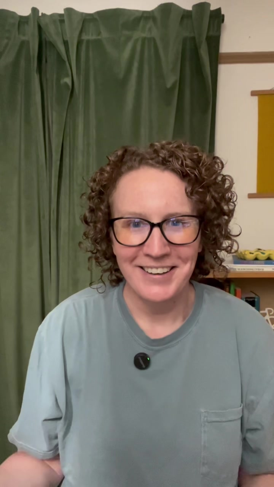

Kaleen Canevari / SocialTemplates v1, decided Nov 24 2026
Reels / Carousels / Kaleen Hub system
Social templates, spec sheet edition
Each template is a past @kaleenc_ format rebuilt in the Kaleen Hub design system: graph paper, navy ink, one technical blue, square corners. Sample copy comes from real posts. Reel covers alternate R-01 and R-02. The other cover options are parked. Every carousel slide type below is in use.
01 Reel covers9:16, 1080 x 1920
Can you be too precise?

In rotationR-01 / Framed figure
Framed figure
FromNew. The current sub-optimization cover.
Use forTalking-head reels with a question hook.
Engineering / Pilates
Perfect engine. Slower car.
In rotationR-02 / Title block
Title block
FromFloor title. Full-bleed photo kept; the dark fade becomes a white panel, since the system has no gradients.
Use forDemo reels where the photo carries the scene.
Footwork / 20 minPerfect alignment.Worse session.
ParkedR-03 / Callout tags
Callout tags
FromLong Stretch stacked labels, squared off and outlined like instrument tags instead of rounded black pills.
Use forShort punchy hooks, two lines.
Do new springs match the spec sheet?
Springs4 new Align
Stretch4 in, 8 in
ToolLuggage scale
ResultWithin 1 lb
ParkedR-04 / Spec sheet
Spec sheet
FromThe Align springs measured-vs-spec reel. Adds a strip of label/value pairs from the experiment.
Use forExperiments and measurements.
Engineering / Pilates
Can you be too precise?
ParkedR-05 / Navy band
Navy band
FromFloor title, inverted. The one navy block the system allows per page.
Use forPromos and series openers that need to stand out on the grid.
Measured / Spec
Green ran heaviest.
Fig. 1Green spring, measured vs. spec.
ParkedR-06 / Chart cover
Chart cover
FromThe momentum and spec-vs-measured graphs. Parked: a chart cover now uses R-01, with the chart in the frame.
Use forReels where the graph is the punchline.
02 Carousel slides4:5, 1080 x 1350
Same springs / Different load
Every cue I used failed.
Then I added a spring.
@kaleenc_01 / 16
C-01 / Hook
Hook
FromSame Springs slide 1, centered mono text. Now a left-aligned Space Grotesk headline with a blue kicker.
For one of my clients, the only way up was to grip.
Everything above the pelvis moved as a block. But they were on the same springs as everyone else.
@kaleenc_03 / 16
C-02 / Story
Story
FromSame Springs slides 2 to 3. Headline line on top, supporting line below in Plex Sans.
CUE 01“Rock your pelvis.”
CUE 02“Peel your back up one bone at a time.”
CUE 03“Move your spine like a wave.”
Nothing landed.
@kaleenc_04 / 16
C-03 / List
List
FromThe italic cue slide. Each item gets a numbered row, like the hub's writing list.
Torque = force × distance
Fig. 2How much force, in what direction, how far from the joint.
@kaleenc_09 / 16
C-04 / Figure
Figure
FromThe torque diagram slide. Diagram goes in a white frame with a Fig. caption.
Teaser on the mat / 5'5" person
Same exercise, two bodies.
130 lb body227 lb-in
Metric26 Nm
250 lb body436 lb-in
Metric49 Nm
92% more load at the hip from the weight of the legs.
@kaleenc_11 / 16
C-05 / Data
Data
FromThe Teaser numbers slide. Numbers move into a spec strip, with the takeaway underneath.
Momentum
p=m×vMomentumMassVelocity
A fast rep carries the carriage past where the springs alone would stop it.
@kaleenc_05 / 12
C-06 / Equation
Equation
FromThe momentum carousel's p = m × v slide, in navy instead of amber on black.
The same spring setting is not the same workout for everyone.
Program with Purpose / Starts Dec 7
Comment PURPOSE
C-07 / Close + CTA
Close + CTA
FromSame Springs closing slide, plus the caption CTA moved onto the slide in a navy band.
03 DecidedNov 24 2026
D-01 / Covers
Reel covers alternate R-01 and R-02.
A reel with a chart or diagram uses R-01 with the graphic in the frame instead of the photo.
D-02 / Footer
Footers say @kaleenc_.
No Pilates Physics wordmark on slides.
D-03 / Emphasis
No italic words.
The amber italic word is retired. Blue stays for small labels, thin lines and data highlights.
D-04 / CTA
The CTA lives on the last slide.
Every carousel ends on the Close + CTA slide with the navy band.